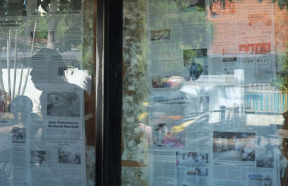

Menurut perspektif kami tentang artikel "Apakah Media Cetak Telah Menuju Senjakala?", yang didalamnya memuat opini dari bapak Gaudensius Suhardi selaku Direktur Pemberitaan Media Indonesia, yaitu "Satu yang pasti, tidak ada kata mati untuk jurnalisme." ucapnya kepada mahasiswa pada Studium Generale ITB Rabu (6/4/2022). Dan hal itu tentu saja membuat kami setuju karena beliau menyampaikan topik terkait kondisi media cetak saat ini, baik tantangan yang dihadapi hingga perjuangan yang telah dilalui pelaku industri media cetak. Dijelaskan Suhardi, fungsi dari pers telah diatur pada Pasal 3 Undang Undang No. 40 tahun 1999 tentang pers yang berbunyi, pers nasional mempunyai fungsi sebagai media informasi, pendidikan, hiburan, dan kontrol sosial. Di samping fungsi-fungsi tersebut, pers nasional dapat berfungsi sebagai lembaga ekonomi. “Pers bukanlah bisnis biasa. Pers tidak dapat terpisahkan dari ekonomi dan politik, sekalipun sangat tergantung dengan teknologi yang terus menerus berubah,” ucapnya. Dari masa ke masa, bisnis pers selalu menghadapi tantangan akan persaingan yang sangat ketat. Mulai dari persaingan antarmedia, persaingan ketat antara bisnis dan redaksi, hingga persaingan memperoleh pembaca serta iklan. Persaingan dan tantangan yang dihadapi industri media cetak kian bertambah ketika era teknologi digital datang. Sebagai contoh, lembaga riset Nielsen memaparkan bahwa persentase iklan yang dimuat di media cetak hanya sebesar 5.5%, kalah jauh dengan media cetak dan televisi. Hal ini menjadi salah satu bukti bahwa kemajuan teknologi digital telah melahirkan media baru yaitu media online dan media sosial. Untuk menghadapi era yang penuh tantangan dan persaingan untuk media cetak, Media Indonesia telah beradaptasi dalam mengarungi era teknologi digital ini untuk bertahan dan maju. Media Indonesia melebarkan sayapnya dengan menyediakan berbagai bentuk media seperti media online, kanal digital, dan e-paper. Upaya lain yang juga dilakukan oleh Media Indonesia adalah membangun skoci bisnis yang masih relevan seperti media hubungan masyarakat, publishing, dan sekolah jurnalistik. “Tidak ada yang tidak mungkin sepanjang kita konsisten untuk beradaptasi,” pungkas Gaudensius. Maka dari itu, kami percaya bahwa jurnalisme tidak akan mati dan tidak ada yang tidak mungkin untuk terus beradaptasi di era digital ini. Sekian dari kelompok kami, terima kasih

By admin / JURNALISME PANDANGAN KAMI MENGENAI "MEDIA CETAK SUDAH MENUJU SENJAKALA"
23 JUNI